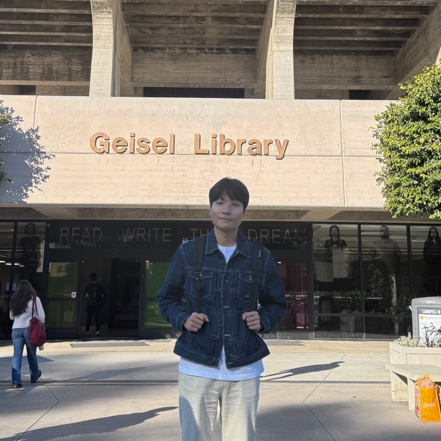
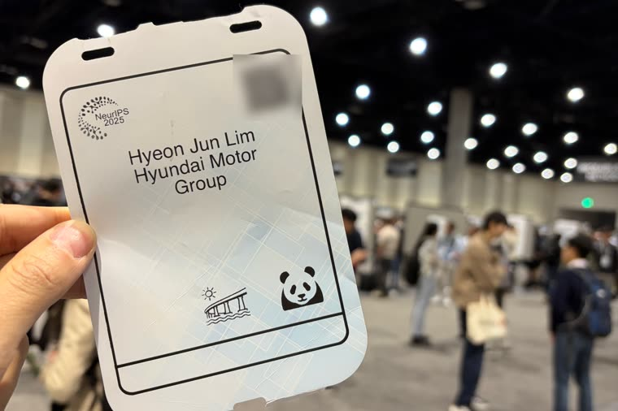
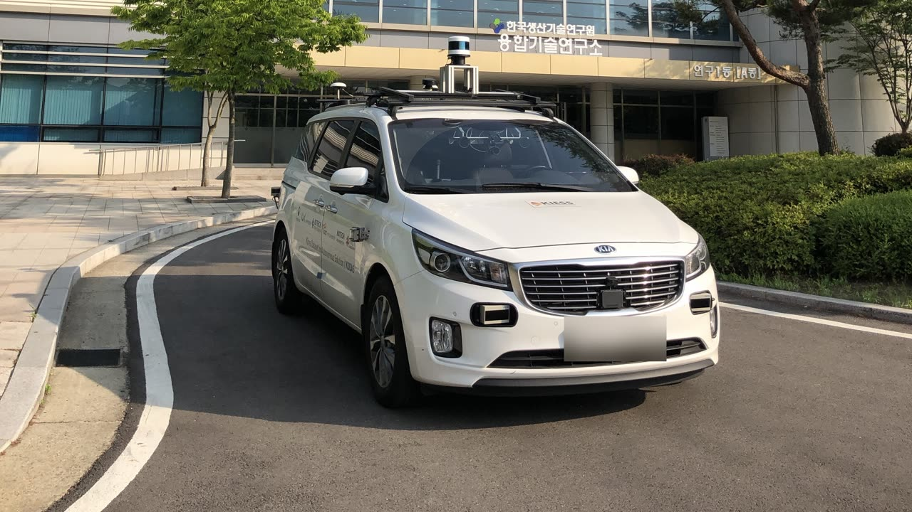
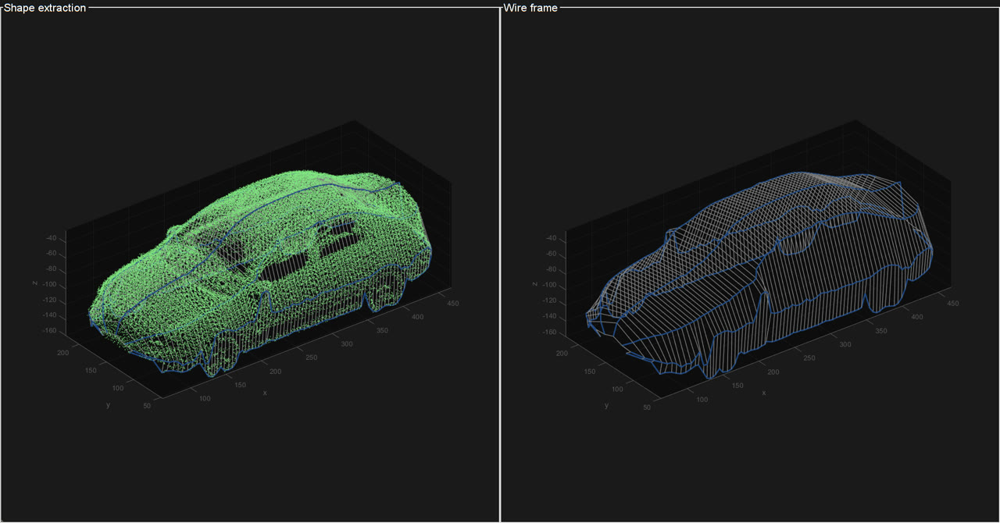

Hyundai Motor CompanySeoul, South Korea
- Senior Research Engineer, Autonomous Driving DevelopmentJan 2025 – Present
- Research Engineer, Autonomous Driving DevelopmentMar 2022 – Dec 2024

I build a closed-loop reinforcement learning framework for autonomous driving, as a Senior Research Engineer at Hyundai Motor Company.
I have also developed an end-to-end autonomous driving system and ran it on a real vehicle, built a LiDAR perception system for Lv.3 and Lv.4 autonomous driving, and constructed Korea's first large-scale LiDAR dataset.
My goal is to make reinforcement learning work on physical systems beyond driving. Simulation and logged experience each fall short on their own, so I work on sim-to-real transfer alongside offline learning from the data that deployed systems already produce, and on judging how far a policy trained either way can be trusted before it reaches hardware.

Built a closed-loop RL training stack combining 3DGS photorealistic environments, rule-driven reward modeling, and World-Model synthetic data, then deployed the resulting driving policies on physical vehicles.
Led development, embedded deployment, and real-world validation of a Transformer-based end-to-end planner, including its first-ever on-vehicle control.
Led the company's LiDAR perception stack, covering sensor evaluation, clustering, localization, and online calibration, validated on Lv.3 and Lv.4 platforms.
Built a high-fidelity LiDAR simulation framework to derive hardware specifications and validate dual-wavelength bathymetric sensing for river and subsurface mapping.
Built South Korea's first large-scale 128-channel LiDAR dataset for autonomous driving, with over a million labeled objects, automated annotation, and cm-level HD mapping.
Developed a sub-2 cm-accuracy multi-LiDAR vehicle-profiling system for unmanned car-wash automation, running in real time on TI embedded hardware.

